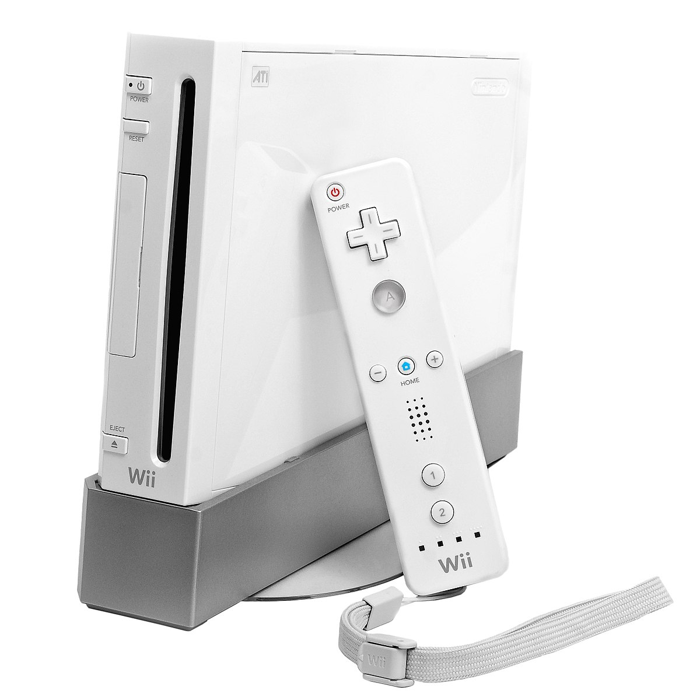

Manette
Manette Accessoires
Accessoires Écrans
Écrans Jeux
Jeux Découverte rétro
Découverte rétroCe site web est un portail pour tout ce qui est en lien avec les platformes informatiques tels que les ordinateurs et consoles.
RéférenceTous les textes descriptif de cette page viennent de wikipédia.
Historique des consoles de Nintendo
-
1. Nintendo Entertainment System (NES)
1983Console de jeux vidéo de génération 8 bits fabriquée par l'entreprise japonaise Nintendo et distribuée à partir de 1985 (1987 en Europe). Son équivalent japonais est la Family Computer ou Famicom, sortie quelques années avant, en 1983. En Corée du Sud,la NES porta le nom de Comboy

-
2. Super Nintendo (SNES)
1990La Super Nintendo Entertainment System ou Super Famicom au Japon, est une console de jeux vidéo 16 bits du constructeur japonais Nintendo commercialisée à partir de août 1991. En Amérique du Nord, la console est sortie avec un look résolument différent. À noter qu'en Corée du Sud, la Super Nintendo est distribuée par Hyundai Electronics sous le nom de Super Comboy. Les consoles sont zonées (Asie, Europe, Amérique) mais les différences concrètes sont minimes et aisément contournables. La Super Nintendo est une console de génération 16 bits, conçue pour concurrencer la Mega Drive de Sega (16 bits), la PC-Engine de NEC (8/16 bits), et la Neo-Geo AES de SNK (16 bits)

-
3. Nintendo 64
1996La Nintendo 64 également connue sous les noms de code Project Reality et Ultra 64 lors de sa phase de développement, est une console de jeux vidéo de salon, du constructeur japonais Nintendo en collaboration avec Silicon Graphics. Elle fut la dernière des consoles de cinquième génération à être sortie, en concurrence avec la Saturn et la PlayStation. La Nintendo 64 a plusieurs particularités : c'est une console « 64-bits » contrairement à ses principales concurrentes dites « 32-bits ». l'entreprise a préféré le support cartouche, plus rentable pour Nintendo mais plus contraignant pour le développement et plus cher que le support CD proposé par ses concurrents. Elle innove en instaurant un stick analogique sur sa manette qui se révélera indispensable pour les jeux en 3D temps réel . Elle était aussi la première console à disposer de quatre ports manettes pour les jeux multijoueurs
-
4. Nintendo GameCube
2001Semblable physiquement à un cube doté d'une anse pour évoquer la facilité du transport, la console utilise un support de stockage unique nommé Nintendo Game Cube Optical Disc. Créé en collaboration avec Matsushita, le disque a grandement été inspiré du DVD avec un changement spécial pour éviter la copie. Nintendo a choisi ce mini format de 8 centimètres pour éviter les longs temps de chargement présents dans les jeux des consoles concurrentes de sa génération. La GameCube est la console la plus petite de sa génération avec des dimensions de 15 cm en largeur, 10 cm en hauteur et 15 cm de profondeur. Elle a été dessinée par Kenishiro Ashida qui voulait, en lui donnant ce design, créer un objet compact et innovant.

-

5. Wii
2006La Wii est une console de jeux de salon du fabricant japonais Nintendo, sortie en 2006. Console de la septième génération, tout comme la Xbox 360 et la PlayStation 3 avec lesquelles elle est en rivalité, elle est la console de salon la plus vendue de sa génération et a comme particularité d'utiliser un accéléromètre capable de détecter la position, l'orientation et les mouvements dans l'espace de la manette. La Wii a marqué un tournant dans l'histoire du jeu vidéo en ouvrant ce loisir à un public plus large, et ciblant l'ensemble de la société.
-
6. Wii U
2012La Wii U est une console de jeu vidéo commercialisée par Nintendo, succédant à la Wii. Elle est sortie le 18 novembre 2012 en Amérique du Nord, le 30 novembre 2012 en Europe et le 8 décembre 2012 au Japon. Première console de jeu vidéo de huitième génération à sortir, elle est en concurrence avec la PlayStation 4 et la Xbox One. La console est annoncée le 7 juin 2011, durant l'E3 2011. La Wii U est la première console de salon à proposer une manette avec un écran tactile intégré, le Wii U GamePad. Les deux principales nouveautés de la console sont apportées par celui-ci. D'une part, le Wii U GamePad permet de continuer une partie, grâce à son écran intégré, même lorsque la télévision n'est pas disponible, mais cette fonctionnalité n'est pas présente avec tous les jeux. D'autre part en complément de manettes Wii, le contrôleur offre en multijoueur une expérience de jeu dite d'« informations asymétriques », c'est-à-dire que les joueurs ne disposent pas nécessairement des mêmes informations sur le GamePad par rapport à une manette et un écran de télévision traditionnels. Enfin, il s'agit de la première console de Nintendo à pouvoir générer des graphismes en haute définition.